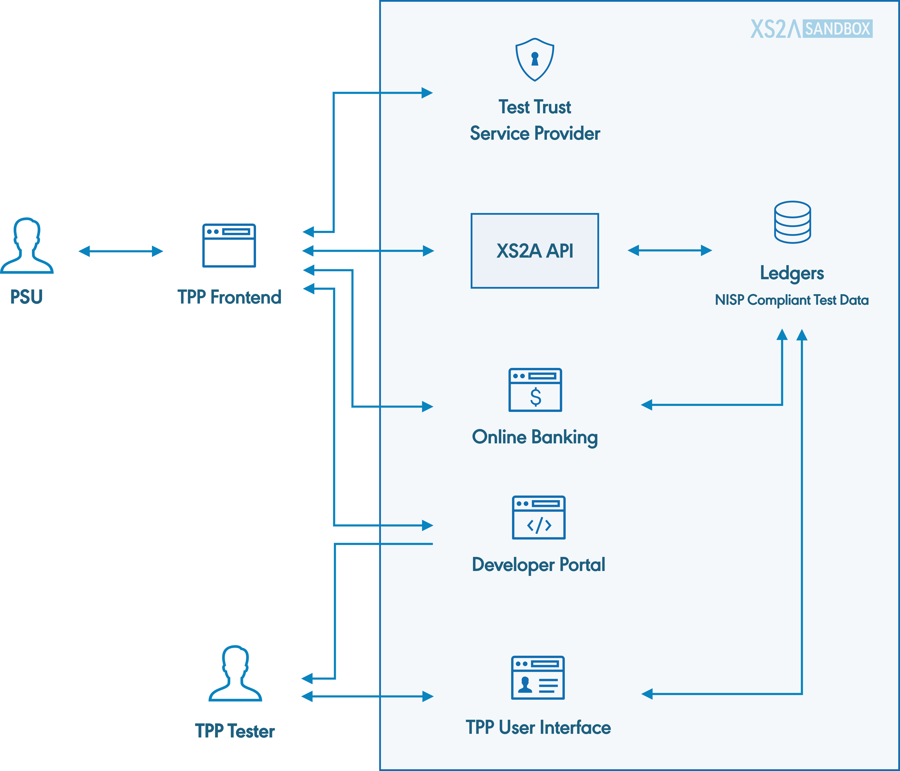
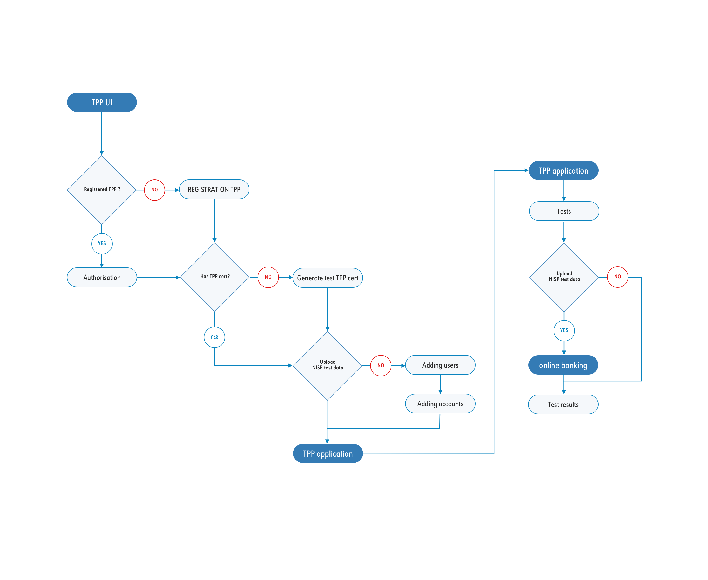

{{ 'GETTING_STARTED.INTRODUCTION.CONTENT.THE_1' | translate }} {{ 'GETTING_STARTED.INTRODUCTION.CONTENT.LINK' | translate }} {{ 'GETTING_STARTED.INTRODUCTION.CONTENT.PART_1' | translate }}
{{ 'GETTING_STARTED.INTRODUCTION.CONTENT.THE_2' | translate }} {{ 'GETTING_STARTED.INTRODUCTION.CONTENT.XS2A' | translate }} {{ 'GETTING_STARTED.INTRODUCTION.CONTENT.PART_2' | translate }}
{{ 'GETTING_STARTED.INTRODUCTION.CONTENT.PART_3' | translate }}
{{ 'GETTING_STARTED.ARCHITECTURE.CONTENT' | translate }}
{{ 'GETTING_STARTED.ARCHITECTURE.CAPTION' | translate }}
{{ 'GETTING_STARTED.INTERFACE.CONTENT.PART_1' | translate }} {{ 'GETTING_STARTED.INTERFACE.CONTENT.XS2A' | translate }} {{ 'GETTING_STARTED.INTERFACE.CONTENT.PART_2' | translate }} NextGenPSD2 {{ 'GETTING_STARTED.INTERFACE.CONTENT.PART_3' | translate }} XS2A Swagger UI {{ 'GETTING_STARTED.INTERFACE.CONTENT.PART_4' | translate }} {{ 'GETTING_STARTED.INTERFACE.CONTENT.LINK' | translate }}
{{ 'GETTING_STARTED.PROFILE.CONTENT.PART_1' | translate }} {{ 'GETTING_STARTED.PROFILE.CONTENT.ASPSP' | translate }} {{ 'GETTING_STARTED.PROFILE.CONTENT.PART_2' | translate }}
{{ 'GETTING_STARTED.CERTIFICATE.CONTENT.PART_1' | translate }} eIDAS {{ 'GETTING_STARTED.CERTIFICATE.CONTENT.PART_2' | translate }} XS2ASandbox {{ 'GETTING_STARTED.CERTIFICATE.CONTENT.PART_3' | translate }} X.509 {{ 'GETTING_STARTED.CERTIFICATE.CONTENT.PART_4' | translate }} ETSI ).
{{ 'GETTING_STARTED.CERTIFICATE.CONTENT.PART_5' | translate }}
{{ 'GETTING_STARTED.UI.CONTENT' | translate }}
{{ 'GETTING_STARTED.OBA.CONTENT' | translate }}
{{ 'GETTING_STARTED.HOW_TO_DOWN.CONTENT.PART_1' | translate }} make check
{{ 'GETTING_STARTED.HOW_TO_DOWN.CONTENT.PART_2' | translate }}
{{ 'GETTING_STARTED.HOW_TO_DOWN.CONTENT.PART_3' | translate }}
{{ 'GETTING_STARTED.HOW_TO_DOWN.CONTENT.PART_4' | translate }}
docker-compose rm -s -f -v{{ 'GETTING_STARTED.HOW_TO_DOWN.TEXT_1' | translate }}
{{ 'GETTING_STARTED.HOW_TO_DOWN.TEXT_2' | translate }}
{{ 'GETTING_STARTED.HOW_TO_DOWN.SUBSECTION_1.PART_1' | translate }} {{ 'GETTING_STARTED.HOW_TO_DOWN.SUBSECTION_1.LINK' | translate }} {{ 'GETTING_STARTED.HOW_TO_DOWN.SUBSECTION_1.PART_2' | translate }}
git clone https://github.com/adorsys/XS2A-Sandbox{{ 'GETTING_STARTED.HOW_TO_DOWN.SUBSECTION_2.PART_1' | translate }}
cd XS2A-Sandbox{{ 'GETTING_STARTED.HOW_TO_DOWN.SUBSECTION_2.PART_2' | translate }}
make{{ 'GETTING_STARTED.HOW_TO_DOWN.SUBSECTION_2.PART_3' | translate }}
docker-compose up{{ 'GETTING_STARTED.HOW_TO_DOWN.SUBSECTION_2.PART_4' | translate }}
{{ 'GETTING_STARTED.HOW_TO_DOWN.SUBSECTION_2.PART_5' | translate }}
make run{{ 'GETTING_STARTED.HOW_TO_DOWN.SUBSECTION_2.PART_6' | translate }}
make start{{ 'GETTING_STARTED.TROUBLES.PART_1' | translate }}
{{ 'GETTING_STARTED.TROUBLES.PART_2' | translate }}
{{ 'GETTING_STARTED.TROUBLES.PART_3' | translate }}
{{ 'GETTING_STARTED.TROUBLES.PART_4' | translate }}
docker-compose rm -s -f -v{{ 'GETTING_STARTED.TROUBLES.PART_5' | translate }}
{{ 'GETTING_STARTED.TROUBLES.PART_6' | translate }}
{{ 'GETTING_STARTED.TROUBLES.PART_7' | translate }}
{{ 'GETTING_STARTED.TROUBLES.PART_8' | translate }}
node -v{{ 'GETTING_STARTED.TROUBLES.PART_9' | translate }}
{{ 'GETTING_STARTED.HOW_TO_REG.LIST.TEXT_1' | translate }}
{{ 'GETTING_STARTED.HOW_TO_REG.LIST.TEXT_2' | translate }}
{{ 'GETTING_STARTED.WHAT_NEXT.PART_1' | translate }} {{ 'GETTING_STARTED.WHAT_NEXT.LINK_1' | translate }} {{ 'GETTING_STARTED.WHAT_NEXT.PART_2' | translate }} {{ 'GETTING_STARTED.WHAT_NEXT.LINK_2' | translate }} {{ 'GETTING_STARTED.WHAT_NEXT.PART_3' | translate }} {{ 'GETTING_STARTED.WHAT_NEXT.POSTMAN' | translate }} {{ 'GETTING_STARTED.WHAT_NEXT.PART_4' | translate }} Swagger.